DAY01 – Corte, Castagniccia, Ponte Novu
A mérés automatikusan indul oldalnyitáskor, majd 5 mp múlva frissít.
A távolságok minden célpontnál frissülnek, és az oldal a legvalószínűbb következő pontra ugrik.
1. Scala di Santa Regina kanyon
42.358658, 9.059980
mérés: várakozás
távolság: —
A Golo folyó által vájt szűk sziklavölgy, ahol a kanyargó út szinte a függőleges falakhoz tapad.
A Niolo kapujaként ismert ikonikus motoros szakasz.
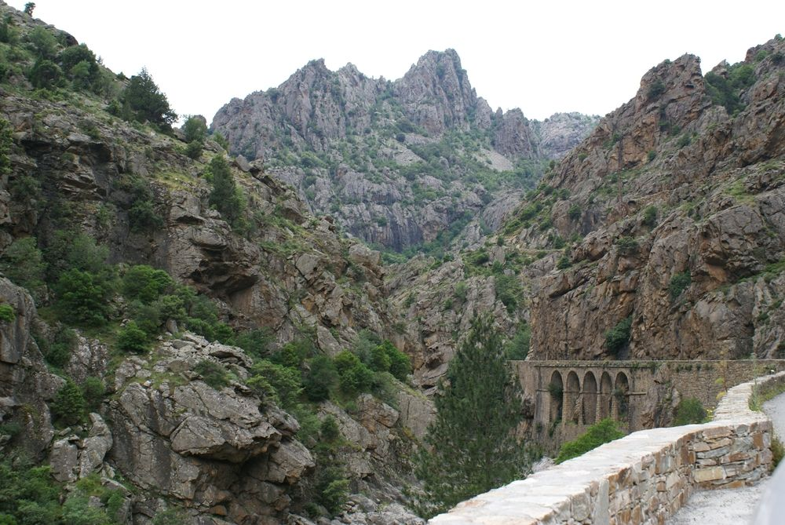
2. Pasquale Paoli szobra, Corte
42.305280, 9.151193
mérés: várakozás
távolság: —
A korzikai függetlenségi mozgalom vezetőjének emlékműve a város főterén.
Paoli a 18. században alkotmányos köztársaságot hozott létre, Európa egyik első modern demokráciáját.
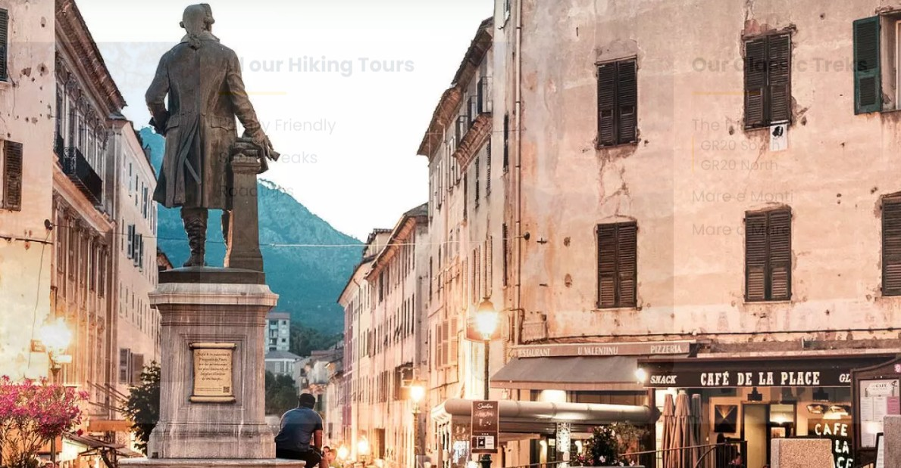
3. Corte citadella
42.304682, 9.148414
mérés: várakozás
távolság: —
Korzika belső fellegvára, Pasquale Paoli főhadiszállása a 18. századi függetlenségi mozgalom idején.
A meredek sziklára épült erőd a vad hegyvidék felett uralkodik.
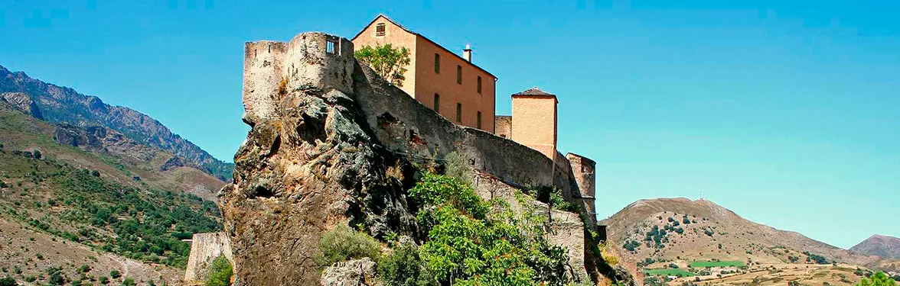
4. Belvédère de Corte
42.303878, 9.148548
mérés: várakozás
távolság: —
Panorámapont Corte felett, ahonnan jól látható a város stratégiai fekvése és a két völgy találkozása.
Kiváló áttekintést ad a terepről indulás előtt.

5. Église de Saint Siméon
42.279090, 9.412402
mérés: várakozás
távolság: —
Megálló az Église de Saint Siméon templomnál az útvonal mentén.
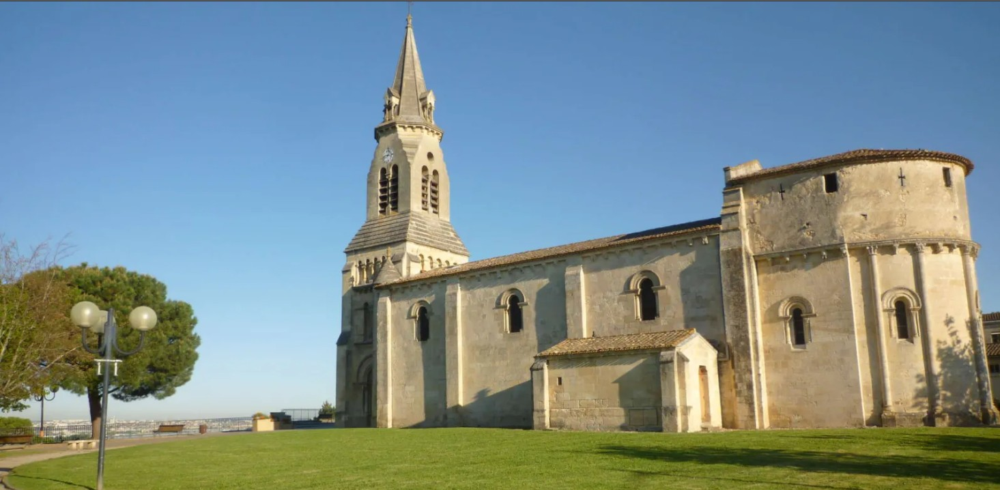
6. Orezza ipari örökség és gyógyforrás
42.376305, 9.377361
mérés: várakozás
távolság: —
A Castagniccia erdeiben működtek a 18–19. század vaskohói.
A környék vasbányászata és a természetes szénsavas források egyedülálló ipari történeti kombinációt adnak.
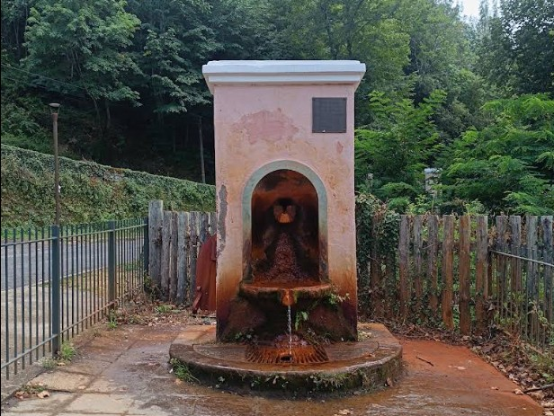
7. Piedicroce
42.374717, 9.367915
mérés: várakozás
távolság: —
A Castagniccia központja, gazdag barokk örökséggel és történelmi jelentőséggel.
Fontos csomópont és ellenállási központ volt.
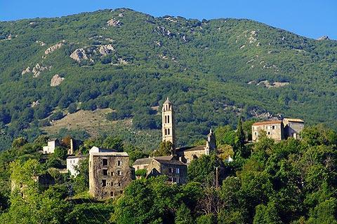
8. Couvent d'Orezza
42.382106, 9.365654
mérés: várakozás
távolság: —
A korzikai függetlenség bölcsője.
Itt fogadták el 1735-ben az első alkotmányt.
Ma romos, de rendkívül erős történelmi atmoszférával bír.
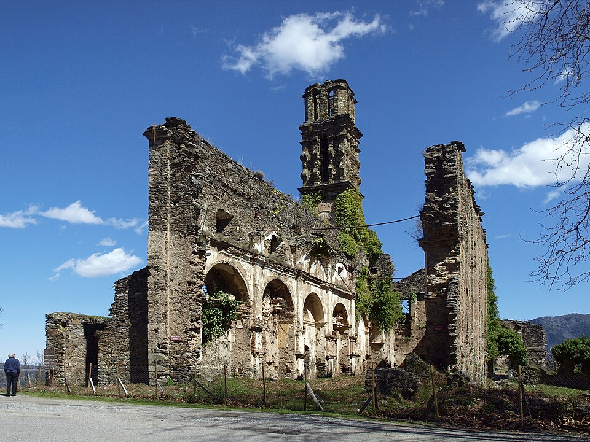
9. Saint Jean Baptiste templom, La Porta
42.423162, 9.352895
mérés: várakozás
távolság: —
A Castagniccia barokk temploma a sziget egyik legjelentősebb vallási építménye.
Homlokzatának gazdag díszítése és tornya a korzikai barokk sajátos stílusát képviseli.
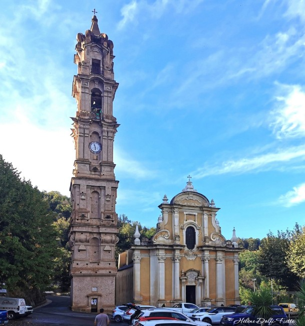
10. Col de Prato
42.427498, 9.331423
mérés: várakozás
távolság: —
985 méteres hágó a Castagniccia és a Casinca között.
Hagyományos pásztorút, fontos földrajzi és kulturális választóvonal.
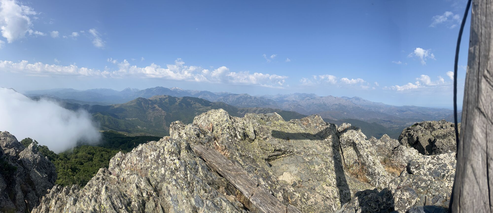
11. Pasquale Paoli szülőháza, Morosaglia
42.437816, 9.309002
mérés: várakozás
távolság: —
A Castagniccia erdeiben álló ház, ahol Paoli született.
Ma múzeumként őrzi a szabadságharc korszakának történetét.
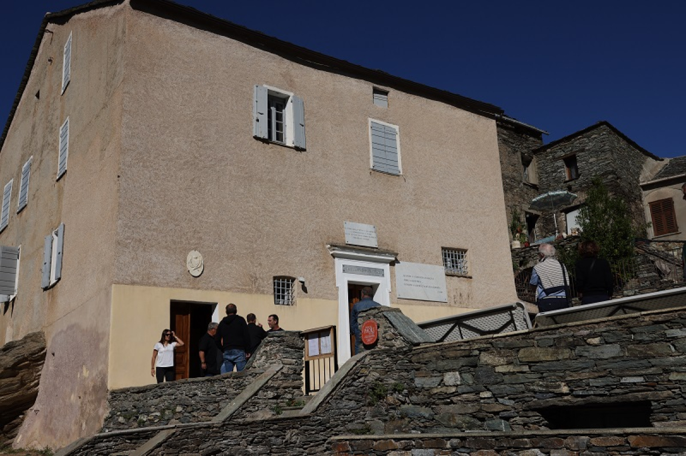
12. Couvent de Morosaglia
42.435036, 9.298189
mérés: várakozás
távolság: —
Oktatási és politikai központ a 18. században.
Itt működött Paoli reformmozgalmának egyik bázisa.
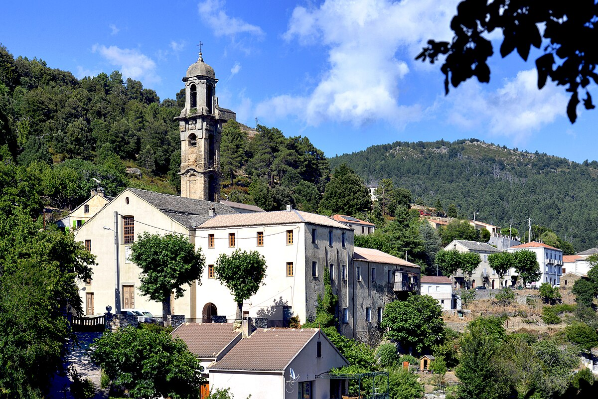
13. Castello di Rostino
42.463131, 9.315195
mérés: várakozás
távolság: —
Középkori romok és korai keresztény emlékek a Golo völgy felett, stratégiai ellenőrzőpont.
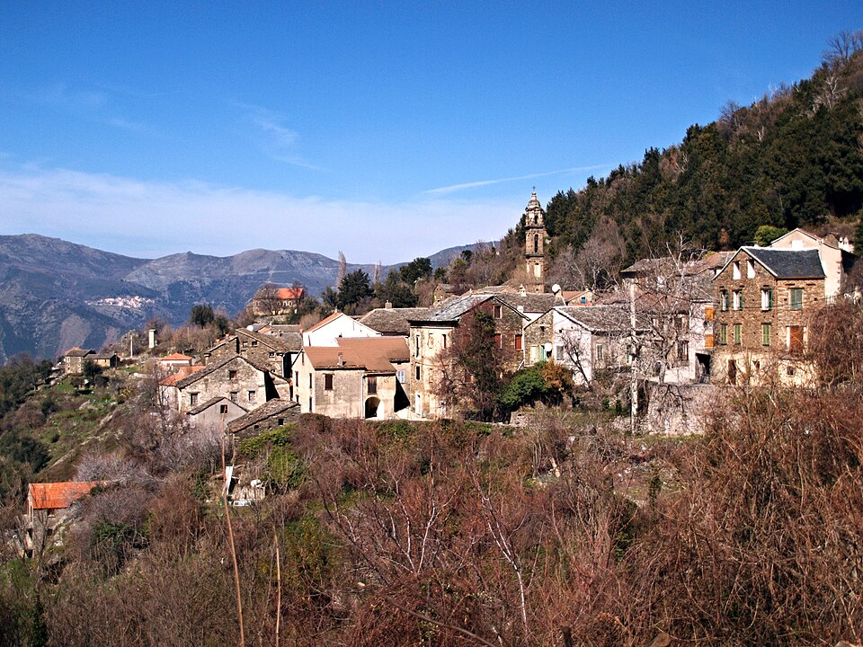
14. Ponte Novu
42.486600, 9.281200
mérés: várakozás
távolság: —
A korzikai szabadságharc döntő vereségének helyszíne 1769-ben.
A romos híd ma nemzeti emlékhely.
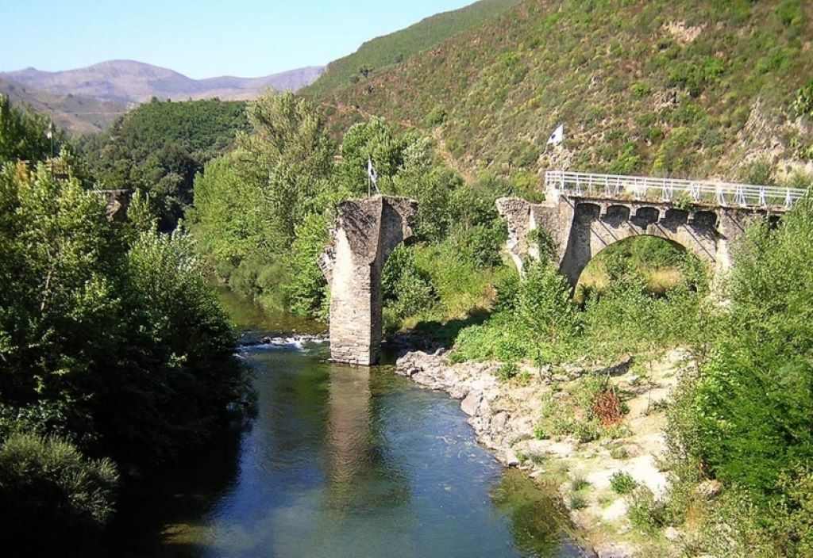
15. Village Miniature de Carcheto
42.487734, 9.281473
mérés: várakozás
távolság: —
Helyi kőből épített miniatűr falu, amely a Castagniccia építészeti hagyományait mutatja be.
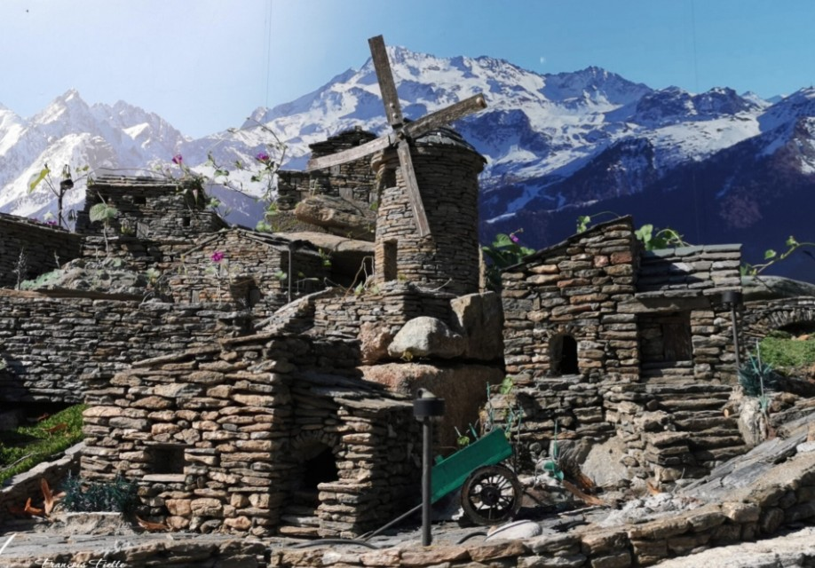
Térkép